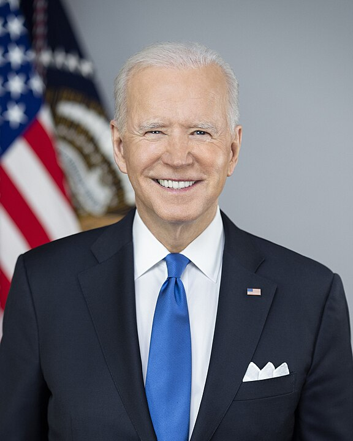

Outgoing US President Joe Biden warned of the dangers of an oligarchy gaining power as he delivered his farewell address and brought a decades-long career in politics to an end.
"Today, an oligarchy is taking shape in America of extreme wealth, power and influence that really threatens our entire democracy, our basic rights and freedom," he said on Wednesday.
Biden, 82, took aim at an ultra-wealthy "tech-industrial complex" which he said could wield unchecked power over Americans.
He also used his final televised speech from the White House to issue warnings about climate change and social media disinformation.
Speaking from the Oval Office where his family had gathered to watch, he touted his single-term administration's record, referencing job creation, infrastructure spending, healthcare, leading the country out of the pandemic, and making the US a safer country.
He added, however, that "it will take time to feel the full impact of all we've done together, but the seeds are planted, and they'll grow and they'll bloom for decades to come".
How Biden tarnished his own legacy Here's what to know about Donald Trump's inauguration Biden wished Donald Trump's incoming administration success, but then issued a series of pointed warnings, with the president stating "so much is at stake right now".
On climate change, he said "powerful forces want to wield their unchecked influence to eliminate the steps we've taken to tackle the climate crisis to serve their own interests for power and profit".
On misinformation, Biden warned that "Americans are being buried under an avalanche of misinformation and disinformation, enabling the abuse of power".